용접산업기사 (2012-05-20 기출문제)
1과목: 용접야금 및 용접설비제도
1. 용접후열처리의 목적이 아닌 것은?
- 용접 잔류응력 제거
- 용접 열영향부 조직개선
- 응력부식 균열방지
- 아크열량 부족보충
(정답률: 93%)

2. 2종이상의 금속원자가 간단한 원자비로 결합되어 본래의 물질과는 전혀 다른 결정격자를 형성할 때 이것을 무엇이라고 하는가?
- 동소변태
- 금속간 화합물
- 고용체
- 편석
(정답률: 75%)
3. 다음 중 적열취성을 일으키는 유화물 편석을 제거하기 위한 열처리는?
- 재결정 풀림
- 확산 풀림
- 구상화 풀림
- 항온 풀림
(정답률: 38%)
4. 냉간 가공한 강을 저온으로 뜨임하면 질소의 영향으로 경화가 되는 경우를 무엇이라 하는가?
- 질량효과
- 저온경화
- 자기확산
- 변형시효
(정답률: 33%)
5. 탄소강의 A2, A3 변태점이 모두 옳게 표시된 것은?
- A2=723℃, A3=1400℃
- A2=768℃, A3=910℃
- A2=723℃, A3=910℃
- A2=910℃, A3=1400℃
(정답률: 75%)
6. 저탄소강 용접금속의 조직에 대한 설명으로 맞는 것은?
- 용접 후 재가열하면 여러 가지 탄화물 또는 α상이 석출하여 용접성질을 저하시킨다.
- 용접금속의 조직은 대부분 페라이트이고 다층의 용접의 경우는 미세 페라이트이다.
- 용접부가 급냉되는 경우는 레데뷰라이트가 생성한 백선조직이 된다.
- 용접부가 급냉되는 경우는 세멘타이트 조직이 생성된다.
(정답률: 54%)
7. 피복 아크 용접시 용융 금속 중에 침투한 산화물을 제거하는 탈산제로 쓰이지 않는 것은?
- 망간철
- 규소철
- 산화철
- 티탄철
(정답률: 63%)
8. 용접 제품의 열처리 선택조건과 가장 관련이 적은 것은?
- 용접부의 치수
- 용접부의 모양
- 용접부의 재질
- 가공경화
(정답률: 64%)
9. 응력 제거 풀림의 효과를 나타낸 것 중 틀린 것은?
- 용접 잔류응력의 제거
- 치수 비틀림 방지
- 충격 저항 증대
- 응력부식에 대한 저항력 감소
(정답률: 62%)
10. 순철은 상온에서 어떤 조직을 갖는가?
- γ-Fe의 오스테나이트
- α-Fe의 페라이트
- α-Fe의 펄라이트
- γ-Fe의 마텐자이트
(정답률: 63%)
11. 한국산업규격에서 냉간압연 강판 및 강대 종류의 기호 중 “드로잉용”을 나타낸 것은?
- SPCC
- SPCD
- SPCE
- SPCF
(정답률: 71%)
12. 용접부 및 용접부 표면의 형상 보조기호 중 영구적인 이면 판재를 사용할 때 기호는?
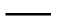
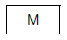
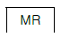
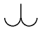
(정답률: 85%)
13. 선의 종류에 따른 용도에 의한 명칭으로 틀린 것은?
- 굵은 실선 - 외형선
- 가는 실선 - 치수선
- 가는 1점 쇄선 - 기준선
- 가는 파선 - 치수보조선
(정답률: 76%)
14. 일반적으로 사용되는 용접부의 비파괴 시험의 기본기호를 나타낸 것으로 잘못 표기한 것은?
- UT : 초음파 시험
- PT : 와류 탐상 시험
- RT : 방사선 투과시험
- VT : 육안 시험
(정답률: 79%)
15. 다음의 용접 보조 기호에 대한 명칭으로 옳은 것은?
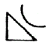
- 볼록 필릿 용접
- 오목 필릿 용접
- 필릿 용접 끝단부를 매끄럽게 다듬질
- 한쪽면 V형 맞대기 용접 평면 다듬질
(정답률: 78%)
16. 다음 용접기호 설명 중 틀린 것은?
- v는 V형 맞대기 용접을 의미한다.
 는 필릿 용접을 의미한다.
는 필릿 용접을 의미한다.- ◯는 점 용접을 의미한다.
 는 플러그 용접을 의미한다.
는 플러그 용접을 의미한다.
(정답률: 91%)
17. 다음 그림은 용접 실제 모양을 표시한 것이다. 기호 표시로 올바른 것은?
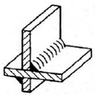
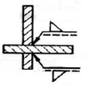
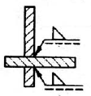
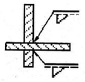
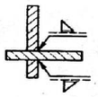
(정답률: 83%)
18. 다음 중 치수 보조기호의 설명으로 옳은 것은?
- Sφ - 원통의 지름
- C - 45°의 모떼기
- R - 구의 지름
- □ - 직사각형의 변
(정답률: 76%)
19. 다음 그림과 같은 원뿔을 단면 M-N 으로 경사지게 잘랐을 때 원뿔에 나타난 단면 형태는?
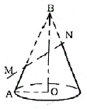
- 원
- 타원
- 포물선
- 쌍곡선
(정답률: 88%)
20. 다음 중 “복사도를 재단할 때의 편의를 위해서 원도(原圖)에 설정하는 표시”를 뜻하는 용어는?
- 중심마크
- 비교눈금
- 재단마크
- 대조번호
(정답률: 67%)
2과목: 용접구조설계
21. 용접 잔류응력의 완화법인 응력제거 풀림에서 적정온도는 625±25℃(탄소강)를 유지한다. 이 때 유지시간은 판 두께 25mm에 대하여 약 몇 시간이 적당한가?
- 30분
- 1시간
- 2시간 30분
- 3시간
(정답률: 75%)
22. 탄소함유량이 약 0.25%인 탄소강을 용접할 때 예열온도는 약 몇 ℃ 정도가 적당한가?
- 90~150℃
- 150~260℃
- 260~420℃
- 420~550℃
(정답률: 58%)
23. 용접성 시험 중 용접부 연성시험에 해당하는 것은?
- 로버트슨 시험
- 카안 인열 시험
- 킨젤 시험
- 슈나트 시험
(정답률: 52%)
24. 용접이음의 충격강도에서 취성파괴의 일반적인 특징이 아닌 것은?
- 항복점 이하의 평균응력에서도 발생한다.
- 온도가 낮을수록 발생하기 쉽다.
- 파괴의 기점은 각종 용접결함, 가스절단부 등에서 발생된 예가 많다.
- 거시적 파면상황은 판 표면에 거의 수평이고 평탄하게 연성이 큰 상태에서 파괴된다.
(정답률: 64%)
25. 용적 40리터의 아세틸린 용기의 고압력계에서 60기압이 나타났다면, 가변압식 300번 팁으로 약 몇 시간을 용접할 수 있는가?
- 4.5시간
- 8시간
- 10시간
- 20시간
(정답률: 66%)
26. 그림과 같은 용접 이음의 종류는?
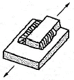
- 전면 필릿 용접
- 경사 필릿 용접
- 양쪽 덮개판 용접
- 측면 필릿 용접
(정답률: 70%)
27. 용접이음의 부식 중 용접 잔류응력 등 인장응력이 걸리거나 특정의 부식 환경으로 될 때 발생하는 부식은?
- 입계부식
- 틈새부식
- 접촉부식
- 응력부식
(정답률: 89%)
28. 용접구조의 설계상 주의사항에 대한 설명 중 틀린 것은?
- 용접이음의 집중, 접근 및 교차를 피한다.
- 용접치수는 강도상 필요한 치수 이상으로 하지 않는다.
- 두꺼운 판을 용접할 경우에는 용입이 얕은 용접법을 이용하여 층수를 늘인다.
- 판면에 직각방향으로 인장하중이 작용할 경우에는 판의 이방성에 주의한다.
(정답률: 89%)
29. 방사선 투과 검사에 대한 설명 중 틀린 것은?
- 내부결함 검출이 용이하다.
- 라미네이션 검출도 쉽게 할 수 있다.
- 미세한 표면 균열은 검출되지 않는다.
- 현상이나 필름을 판독해야 한다.
(정답률: 65%)
30. 용접부를 연속적으로 타격하여 표면층에 소성 변형을 주어 잔류 응력을 감소시키는 방법은?
- 저온 응력 완화법
- 피닝법
- 변형 교정법
- 응력 제거 어닐링
(정답률: 91%)
31. 서브머지드 아크용접에서 용접선의 전후에 약 150mm × 150mm × 판 두께 크기의 엔드 탭을 붙여 용접 비드를 이음끝에서 약 100mm 정도 연장시켜 용접완료 후 절단하는 경우가 있다. 그 이유로 가장 적당한 것은?
- 용접 후 모재의 급냉을 방지하기 위하여
- 루트간격이 너무 클 때, 용락을 방지하기 위하여
- 용접시점 및 종점에서 일어나는 결함을 방지하기 위하여
- 용접선의 길이가 너무 짧을 때, 용접 시공하기가 어려우므로 원활한 용접을 하기 위하여
(정답률: 85%)
32. 용착금속의 인장강도가 40kgf/mm2이고, 안전율이 5라면 용접이음의 허용응력은 얼마인가?
- 8kgf/mm2
- 20kgf/mm2
- 40kgf/mm2
- 200kgf/mm2
(정답률: 79%)
33. 구조물 용접에서 용접선이 만나는 곳 또는 교차하는 곳에 응력 집중을 방지하기 위해 만들어 주는 부채꼴 오목부를 무엇이라 하는가?
- 스캘럽
- 포지셔너
- 매니퓰래이터
- 원뿔
(정답률: 71%)
34. 잔류응력이 있는 제품에 하중을 주고 용접부에 약간의 소성변형을 일으킨 다음 하중을 제거하는 잔류 응력 제거법은?
- 저온 응력 완화법
- 기계적 응력 완화법
- 고온 응력 완화법
- 피닝법
(정답률: 86%)
35. 용접구조물의 재료 절약 설계 요령으로 틀린 것은?
- 가능한 표준 규격의 재료를 이용한다.
- 재료는 쉽게 구입할 수 있는 것으로 한다.
- 고장이 났을 경우 수리할 때의 편의도 고려한다.
- 용접할 조각의 수를 가능한 많게 한다.
(정답률: 93%)
36. 그림과 같은 맞대기 용접 이음 홈의 각부 명칭을 잘못 설명한 것은?
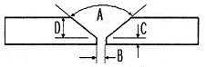
- A - 홈 각도
- B - 루트간격
- C - 루트면
- D - 홈 길이
(정답률: 79%)
37. 필릿 용접부의 내력(단위 길이당 허용력) f =1700kgf/cm의 작용을 견디어 낼 수 있는 용접 치수(다리 길이) h는 약 몇 mm 인가? (단, 용접부의 허용응력 σ = 1000 kgf/cm2 이다.)
- 12
- 17
- 21
- 25
(정답률: 16%)
38. 용접금속의 균열에서 저온균열의 루트크랙은 실험에 의하면 약 몇 ℃ 이하의 저온에서 일어나는가?
- 200℃ 이하
- 400℃ 이하
- 600℃ 이하
- 800℃ 이하
(정답률: 82%)
39. 용접 제품의 설계자가 알아야 하는 용접 작업 공정의 제반 사항 중 맞지 않는 것은?
- 용접기 및 케이블의 용량은 충분하게 준비한다.
- 홈 용접에서 용접 품질상 첫패스는 뒷댐판 없이 용접한다.
- 가능한 높은 전류를 사용하여 짧은 시간에 용착량을 많게 용접한다.
- 용접 진행은 부재의 자유단으로 향하게 한다.
(정답률: 58%)
40. 용접후열처리 중 응력제거 열처리의 목적과 가장 관계가 없는 것은?
- 응력부식균열 저항성의 증가
- 용접변형을 방지
- 용접열영향부의 연화
- 용접부의 잔류응력 완화
(정답률: 26%)
3과목: 용접일반 및 안전관리
41. 구리 및 구리합금의 가스용접용 용제에 사용되는 물질은?
- 중탄산소다
- 염화칼슘
- 붕사
- 황산칼륨
(정답률: 86%)
42. 가스용접에서 전진법에 비교한 후진법의 설명으로 틀린 것은?
- 열이용률이 좋다.
- 용접속도가 빠르다.
- 용접변형이 크다.
- 후판에 적합하다.
(정답률: 66%)
43. 피복 아크 용접에서 아크 길이가 긴 경우 발생하는 용접결함에 해당되지 않는 것은?
- 선상조직
- 스패터
- 기공
- 언더컷
(정답률: 66%)
44. 테르밋 용접에서 테르밋제란 무엇과 무엇의 혼합물인가?
- 탄소와 붕사 분말
- 탄소와 규소의 분말
- 알루미늄과 산화철의 분말
- 알루미늄과 납의 분물
(정답률: 77%)
45. 피복 아크 용접시 안전홀더를 사용하는 이유로 맞는 것은?
- 자외선과 적외선 차단
- 유해가스 중독 방지
- 고무장갑 대용
- 용접작업 중 전격예방
(정답률: 94%)
46. MIG용접시 사용되는 전원은 직류의 무슨 특성을 사용하는가?
- 수하 특성
- 통전류 특성
- 정전압 특성
- 정극성 특성
(정답률: 69%)
47. 피복 아크 용접봉에서 피복제의 편심률은 몇 % 이내이어야 하는가?
- 3%
- 6%
- 9%
- 12%
(정답률: 86%)
48. 피복 아크 용접에서 피복제의 주된 역할 중 틀린 것은?
- 전기 절연작용을 한다.
- 탈산 정련작용을 한다.
- 아크를 안정시킨다.
- 용착금속의 급냉을 돕는다.
(정답률: 83%)
49. 아크 용접기의 사용률을 구하는 식으로 옳은 것은?
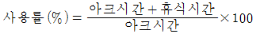
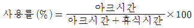
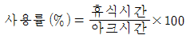
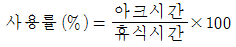
(정답률: 70%)
50. 연강용 피복 아크 용접봉의 피복제 계통에 속하지 않는 것은?
- 철분산화철계
- 철분저수소계
- 저셀룰로오스계
- 저수소계
(정답률: 68%)
51. 탄산가스 아크 용접의 특징에 대한 설명으로 틀린 것은?
- 전류밀도가 높아 용입이 깊고 용접속도를 빠르게 할 수 있다.
- 적용 재질이 철 계통으로 한정되어 있다.
- 가시 아크이므로 시공이 편리하다.
- 일반적인 바람의 영향을 받지 않으므로 방풍장치가 필요 없다.
(정답률: 87%)
52. 연납에 대한 설명 중 틀린 것은?
- 연납은 인장강도 및 경도가 낮고 용융점이 낮으므로 납땜 작업이 쉽다.
- 연납의 흡착작용은 주로 아연의 함량에 의존되며 아연 100%의 것이 가장 좋다.
- 대표적인 것은 주석 40%, 납 60%의 합금이다.
- 전기적인 접합이나 기밀, 수밀을 필요로 하는 장소에 사용된다.
(정답률: 74%)
53. 용접용 케이블 이음에서 케이블을 홀더 끝이나, 용접기 단자에 연결하는 데 쓰이는 부품의 명칭은?
- 케이블 티그
- 케이블 태그
- 케이블 러그
- 케이블 래그
(정답률: 66%)
54. 직류와 교류 아크 용접기를 비교한 것으로 틀린 것은?
- 아크 안정 : 직류용접기가 교류용접기 보다 우수하다.
- 전격의 위험 : 직류용접기가 교류용접기 보다 많다.
- 구조 : 직류용접기가 교류용접기 보다 복잡하다.
- 역률 : 직류용접기가 교류용접기 보다 매우 양호하다.
(정답률: 60%)
55. 연강용 피복 아크 용접봉 종류 중 특수계에 해당하는 용접봉은?
- E4301
- E4311
- E4324
- E4340
(정답률: 73%)
56. TIG, MIG, 탄산가스 아크 용접 시 사용하는 차광렌즈 번호로 가장 적당한 것은?
- 12 ~ 13
- 8 ~ 9
- 6 ~ 7
- 4 ~ 5
(정답률: 84%)
57. 점용접의 3대 요소에 해당되는 것은?
- 가압력, 통전시간, 전류의 세기
- 가압력, 통전시간, 전압의 세기
- 가압력, 냉각수량, 전류의 세기
- 가압력, 냉각수량, 전압의 세기
(정답률: 83%)
58. 아크용접용 로봇에서 용접작업에 필요한 정보를 사람이 로봇에게 기억(입력)시키는 장치는?
- 전원장치
- 조작장치
- 교시장치
- 머니퓰래이터
(정답률: 55%)
59. TIG 용접기에서 직류 역극성을 사용하였을 경우 용접 비드의 형상으로 맞는 것은?
- 비드 폭이 넓고 용입이 깊다.
- 비드 폭이 넓고 용입이 얕다.
- 비드 폭이 좁고 용입이 깊다.
- 비드 폭이 좁고 용입이 얕다.
(정답률: 80%)
60. 직류 아크 용접기에서 발전형과 비교한 정류기형의 특징 설명으로 틀린 것은?
- 소음이 적다.
- 취급이 간편하고 가격이 저렴하다.
- 교류를 정류하므로 완전한 직류를 얻는다.
- 보수 점검이 간단하다.
(정답률: 79%)